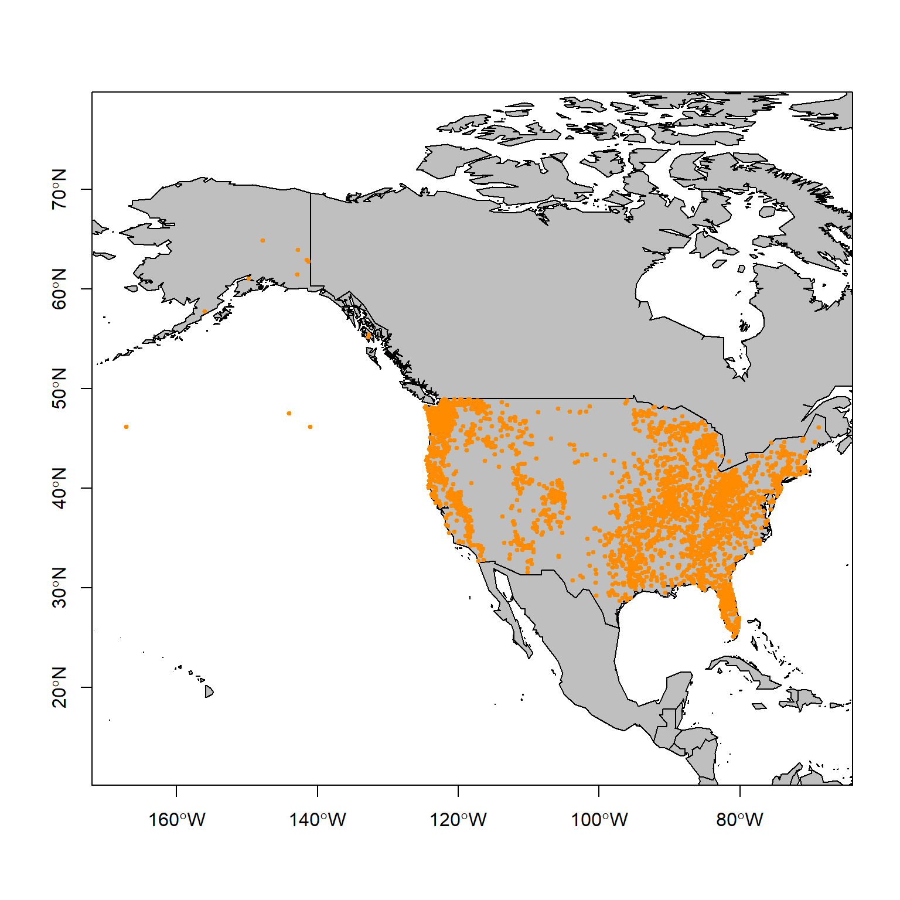
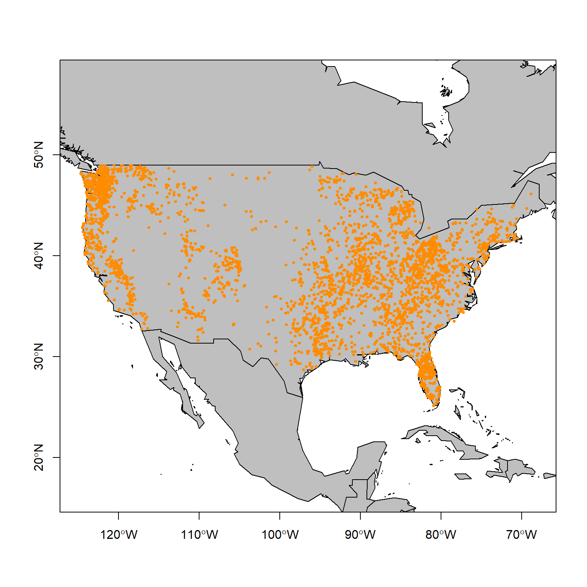
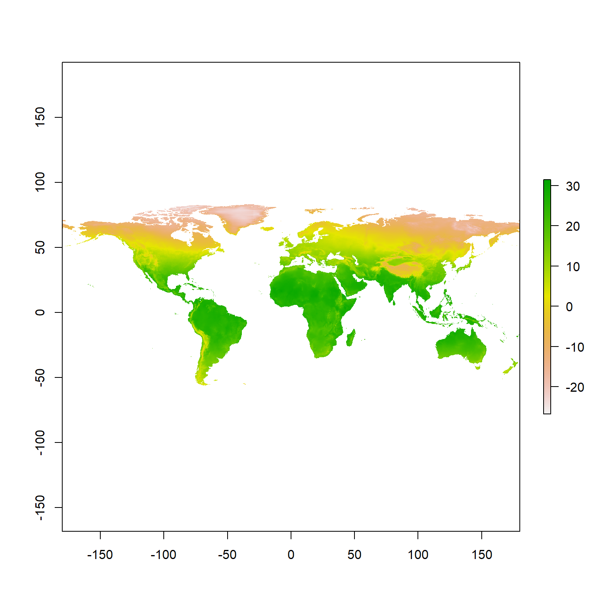
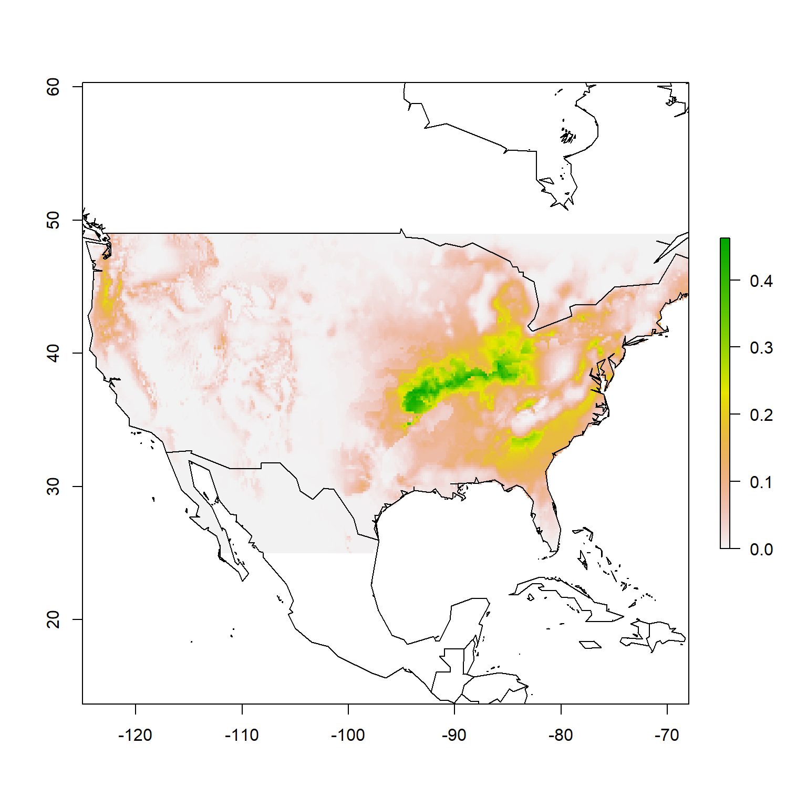
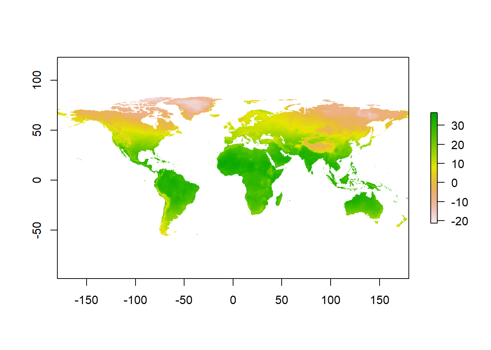
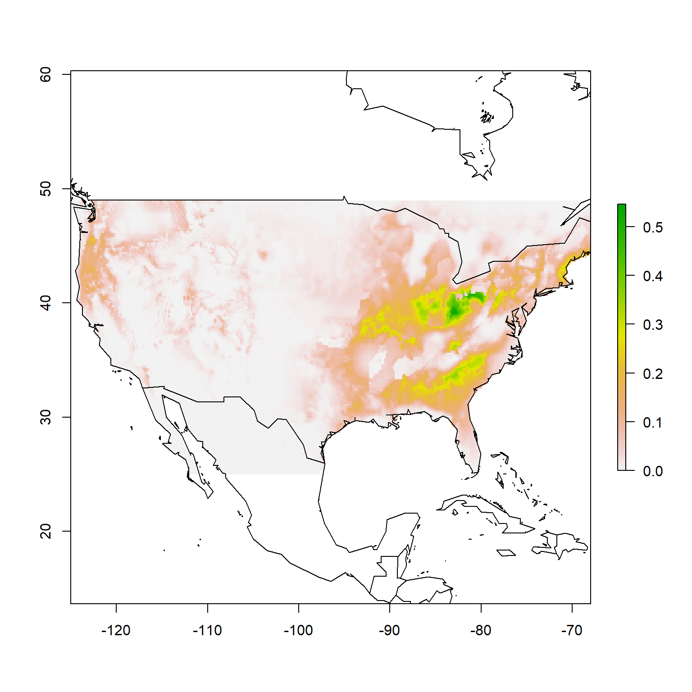
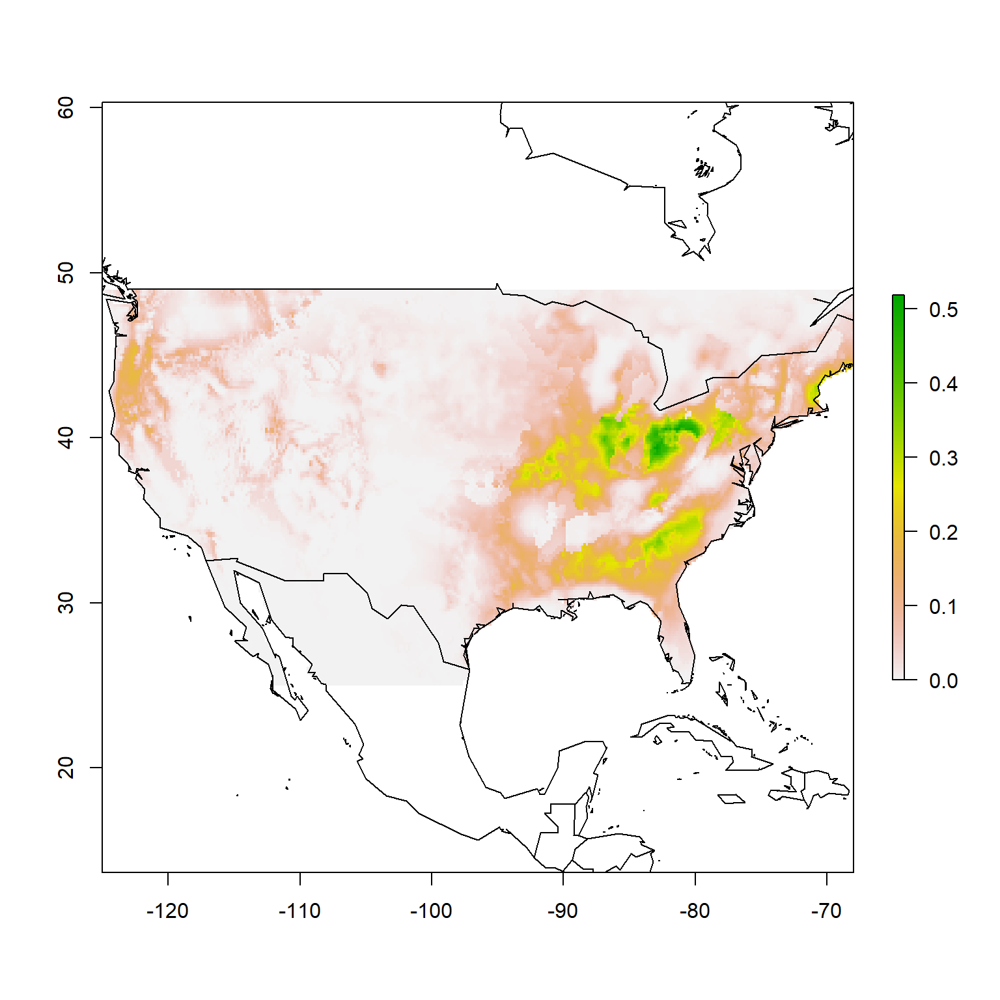

Date: 10/7/2020
Download the project folder here.
Make sure to download the entire folder (not just the contents).
You can open the Rproject directly by double-clicking on the file which will launch Rstudio, or once you have opened Rstudio open the project folder using File -> Open Project or using the Rproj icon in the top right corner above the environment panel.
Learning Objectives
After completing this lab you should
bioclim algorithm fits species occurrence records.Before we start
There are several packages that need to be downloaded and installed before we can run this analysis50 Remember, you only need to install them once - but any time you restart your R session e.g. by restarting Rstudio you need to make sure to run the code that loads the libraries..
# install libraries
install.packages("sp")
install.packages("raster")
install.packages("maptools")
install.packages("rgdal")
install.packages("dismo")
install.packages("tidyverse")
library(conflicted)
conflict_prefer("select", "dplyr")
conflict_prefer("filter", "dplyr")In this tutorial we are going to learn the fundamental principles of building an occurrence-based51 As a side-product in writing this tutorial, I think I might actually learn how to correctly spell ‘occurrence’. species distribution models (SDM).
One of the fundamental questions of ecology is how environmental conditions shape geographic species distributions.
► Question 11.1
The concept of an ecological niche has three facets, first it refers to the specific area where an organism lives (comparable to its habitat), second, it describes the role of an organism in an ecoystem, and finally it describes the interrelationship of an organism with all the abiotic and biotic factors it interacts with. Briefly outline what a fundamental and a realized niche is with a focus on how both abiotic and biotic conditions shape a species’ niche.
We can use this fundamental concept to understand how species distribution models are built. In short, we can identify climatic conditions in locations were a species has been observed (occurs) and use those to build a model of to predict the theoretical distribution of a species by identifying locations that have a high probability of being good habitat based on abiotic predictors. Essentially, species distribution models are mathematical representations of the environmental conditions correlated with observed geographic distribution of a species52 Of course, more sophisticated version of species distribution models account not only for abiotic parameters but also for biotic factors that could further affect as species actual distribution; though that is a lot more difficult to model!.
One of the advantages of using climatic data as predictors is that we can also use data sets of future climate conditions that have been modeled based on various climate scenarios to understand how species distributions will change as a result of climate-driven shifts in local environmental conditions.
For this tutorial, we will not assess how “good” our generated model is, instead we will focus on the principles of how such a model is built. We will use a very simple model and a general set of climate variables to illustrate the fundamental principles, though currently more sophisticated models are usually used and machine learning is becoming an increasingly important technique. In the end though, the fundamental principles are the same.
Now, let’s load the necessary libraries and get rolling53 Note: any time you start a new Rsession this is the code chunk you will need to re-run!.
To learn the fundamental steps of building a SDM, we are going to create species distribution model for the Sasquatch, a large, hairy, bipedal ape-like creature found (or is it?) throughout North America54 I suppose, technically, since we were venturing into cryptozoology here it is not a species, but rather a cryptid distribution model.
The first think we need for any SDM is a data set documenting species occurrence, i.e. geo-coded observations of a given species in the wild.
Four our purposes, we turn to the Bigfoot Field Researchers Organization (BFRO), founded in 1995 as the “only scientific research organization exploring the Bigfoot/Sasquatch mystery”. You can turn to their website for answers on important FAQs, including ‘Do Bigfoot Sasquatch bury their dead?’, ‘Where is the physical evidence?’, ‘Wasn’t this all shown to be a fake?, and ’Why do you want scientists to recognize the Sasquatch as a species? Isn’t it better to just leave them alone?’. Their main focus though is on compiling reports of sightings and investigating them. In other words, they have a database full of geo-coded reported sightings55 And even better, it has already been downloaded and wrangled and is accessible (with sightings through 2018) right here..
Let’s read in the data and then we can take a look at the information we can glean from this data set by looking at the column names.
# read data
occurrence <- read_delim("data/bfro_reports_geocoded.txt", delim = "\t")
# take a look at the data
colnames(occurrence)## [1] "observed" "location_details" "county" "state" "season"
## [6] "title" "latitude" "longitude" "date" "number"
## [11] "classification" "geohash"► Question 11.2
Take a look at the column names and describe what type of information we have available for Sasquatch. Argue which you think will be the most informative to build our species distribution model and discuss which additional information would be helpful to have.
Because we need to be able to identify the exact locations Sasquatch occur, we are going to remove any observations that do not have latitude and longitude information.
► Question 11.3
Note how many reports we loose through this filtering step. Can you think of an alternative to not removing those reports and and still making them useable for creating our model?
We have queried only sightings in the United states, one of the first questions we should consider is what their geographic extent is and how they are distributed on a map56 To keep it simple, we are going to use base R plotting functions instead of our usual ggplot layers.
# get minimum and maximum lat/longs
max.lat <- ceiling(max(occurrence$latitude))
min.lat <- floor(min(occurrence$latitude))
max.lon <- ceiling(max(occurrence$longitude))
min.lon <- floor(min(occurrence$longitude))
# create an extent object of the range of observations
geo_range <- extent(x = c(min.lon, max.lon, min.lat, max.lat))
# get base map
data(wrld_simpl)
# plot the base map
plot(wrld_simpl,
xlim = c(min.lon, max.lon),
ylim = c(min.lat, max.lat),
axes = TRUE,
col = "grey75")
# add individual occurrences
points(x = occurrence$longitude,
y = occurrence$latitude,
col = "darkorange",
pch = 20,
cex = 0.75)
# draw box around figure
box()Figure 11.1: Map of Sasquatch sighting in the United States based on the BFRO database as of 2018.
► Question 11.4
Give a brief descriptions of the spatial distribution of the occurrence of Sasquatch in the United States. Note areas where sightings appear to be random, clustered or more dispersed, determine if you think any points should be removed.
► Question 11.5
Discuss some possible explanations for the patterns you have observed to determine whether you think this data set is a reasonable representation of the ecological niche of the Sasquatch and can be used to create a species distribution model.
Good catch - those sightings in the middle of the ocean are probably errors in the geo-coding. Further, we don’t know how reliable the data for Alaska is as this data set is based on opportunistic sightings57 Well, admittedly if you poke around the BFRO website you will find that people do plan expeditions..
The data for for observations in the lower 48 seems much more reliable, so let’s restrict our data to those observations.
# load and filter data
occurrence <- read_delim("data/bfro_reports_geocoded.txt", delim = "\t") %>%
filter(!is.na(longitude),
!is.na(latitude),
longitude > -130,
latitude < 55)
# get minimum and maximum lat/longs
max.lat <- ceiling(max(occurrence$latitude))
min.lat <- floor(min(occurrence$latitude))
max.lon <- ceiling(max(occurrence$longitude))
min.lon <- floor(min(occurrence$longitude))
# create an extent object
geo_range <- extent(x = c(min.lon, max.lon, min.lat, max.lat))
# get base map
data(wrld_simpl)
# plot the base map
plot(wrld_simpl,
xlim = c(min.lon, max.lon),
ylim = c(min.lat, max.lat),
axes = TRUE,
col = "grey75")
# add individual occurrences
points(x = occurrence$longitude,
y = occurrence$latitude,
xlim = c(min.lon, max.lon),
ylim = c(min.lat, max.lat),
col = "darkorange",
pch = 20,
cex = 0.75)
# draw box around figure
box()Figure 11.2: Map of Sasquatch sighting in the lower 48 states based on the BFRO database as of 2018.
This should work - on to the next step!
The next thing we need is a set of predictor variables. Climate is complex and multidimensional, though at its core climate is determined by long-term patterns in mean and variability of temperature and precipitation.
We are going to use the bioclim data set from CliMond. Bioclim variables are commonly used for species distribution modeling as they are based on long-term trends (as opposed to e.g. the exact conditions when the species was observed).
► Question 11.6
Look up the descriptions of the bioclim variables and give a brief description of the four abiotic parameters that are included and how they are being parameterized. Argue which you think are most important to describe a species distribution/ecological niche and whether you think overall this data set will help us understand Sasquatch species distribution.
The data set we are using includes a core set of 19 variables that describe temperature and precipitation, along with an additional 16 variables that describe solar radiation and soil moisture.
I have already downloaded the raster files of the historical (contemporary) bioclim data sets at a resolution of 10’ (minutes) into the data folder. The “historical” data set consists of data from 1961 - 1990 centered on 1975. A raster file is an image file consisting of pixels with data associated with it. In this case, our “pixels” are 10’ x 10’ and depending on the layer the value associated with each pixel is the value for that bioclim value at that geographic location.
# get list of files
files <- list.files("data/", pattern='^CM10_1975H', full.names=TRUE )
# import and convert to raster stack
predictors <- stack(files)We have now created an object that at its core consists of a list where each element is a layer (bioclim variable raster).
Let’s plot the first bioclim variable (Bio01, annual mean temperature).
Figure 11.3: Global distribution of annual mean temperature (1961 - 1990, centered on 1975).
We see the pattern we would intuitively expect, with temperatures decreasing as you move poleward and being warmest around the poles.
► Question 11.7
Choose a range of 5 bioclim variables (this means, don’t just plot the first five variables, chose something more representative of the different parameters represented) and plot each one with a desciption of the variable you are plotting and a 1-2 sentence description of the overall pattern.
Now we have all the information we need to build out model.
The first thing we need to do is extract the values for each bioclim variable at our occurrence points (observations).
# create df with just xy coordinates
xy <- occurrence %>%
dplyr::select(longitude, latitude)
# crop bioclim data to geographic range
cropped_predictors <- crop(x = predictors, y = geo_range)
# extract values
presence <- raster::extract(cropped_predictors, xy)Let’s take a quick look at the first few rows and columns of the matrix we just created.
## CM10_1975H_Bio01_V1.2 CM10_1975H_Bio02_V1.2 CM10_1975H_Bio03_V1.2
## [1,] 6.222110 12.33702 0.3082512
## [2,] 9.368294 12.92369 0.2992488
## [3,] 4.625152 12.45517 0.2672966
## [4,] 9.857348 12.10535 0.3889973
## [5,] 2.780401 14.78537 0.3965279
## [6,] 3.327682 14.78337 0.3814484► Question 11.8
Briefly state what these values represent.
Our next step is to fit a bioclim model to the data set we just generated.
The bioclim model is a classic climate-envelope-model58 You may remember reading about this in your reading assignments..
Briefly, the algorithm computes the similarity of locations by comparing the value of each environmental variables being used (our bioclim data set) to a distribution of that values at all locations with known presence59 Also called the training sites; these are our occurrence points.. The closer that value is to the median (50th percentile), the more suitable that location is assumed to be. Suitability scores are between 0 and 1, with 1 indicating a “perfect suitability”.)
In general, there is no distinction between the tails of the distribution (i.e. the 90th and 10th percentile are equivalent), though in some implementations you can specify those to be treated as distinct. As a result e.g. low levels of precipitation could be limiting but high levels would not be.
Finally, we will use our suitability scores and the bioclim raster data set to generate a predictive map of the Sasquatch species distribution. This means that the algorithm will assign a suitability score to each pixel based on the model and create a new raster layer.
# generate raster with predicted distribution
prediction <- dismo::predict(x = cropped_predictors,
object = model.fit,
ext = geo_range)Let’s plot our species distribution map.
# plot model probabilities
plot(prediction,
xlim = c(min.lon, max.lon),
ylim = c(min.lat, max.lat),
axes = TRUE)
# add map
plot(wrld_simpl, add = TRUE, border = "black")
# draw box around it
box()Figure 11.4: Species distribution model for Sasquatch. Color indicates the probability of encountering Sasquatch in the lower 48 states based on habitat suitability.
► Question 11.9
Give a brief description of the habitat suitability map, including the maximum probabilities. Describe wether this result fits your expectations based on the distribution map of reports we looked at earlier. According to our map, if you were planning a Sasquatch research trip, where would you be headed?
Our highest habitat suitability values (probability of occurring) seem pretty low. One reason for this is that we used presence-only data.
► Question 11.10
The alternative to presence-only models is to have presence-absence data. Discuss how this would improve the models. Argue why you think presence-only data sets are easier to generate.
► Question 11.11
A work-around of not having absence data is to generate pseudo-absence data. This is done by generating random points within the geographic range and using those as proxies for absence data. Briefly argue the merits and limitations of such an approach.
Projections of future climate change are heavily dependent on human activity and the resulting greenhouse gas emissions. Therefore the IPCC’s Assessment Reports contain scenario families that represent projected climate conditions based on emission scenarios resulting from future technological and economic development as defined by each scenario.
Let’s look at how the species distribution map might change in response to a shift in environmental parameters.
In your data directory I have placed a set of bioclim raster files for 2100 generated using the A1B and A2 scenarios. The A1 climate scenarios assume a more integrated world characterized by rapid economic growth, a global population that peaks at 9 billion (2050) and the gradually declines, rapid spread of new/efficient technologies, and a convergent world characterized by extensive worldwide social and cultural interactions. Scenario A1B further assumes a balanced emphasis on fossil and non-fossil fuels. By contrast, A2 scenarios assume a more divided world consisting of independently operating and self-reliant nations and regionally-oriented economic development. The population is assumed to continuously grow. Finally, this scenario is characterized by high emissions.
Let’s start with the A1 climate scenario to create our species distribution model.
# get list of files
files <- list.files("data/", pattern='^CM10_2100_A1B', full.names=TRUE )
# import and convert to raster stack
predictors_A1 <- stack(files)► Question 11.12
Use the same set of bioclim variables you plotted earlier and plot each one with a desciption of the variable you are plotting and a 1-2 sentence description of the overall pattern and a note as to who this has changed compared to the current (historical) bioclim variables. Consider how you think these changes might affect the species distribution model for Sasquatch.

Now let’s fit our model and create predictive map.
# create df with just xy coordinates
xy <- occurrence %>%
select(longitude, latitude)
# crop bioclim data to geographic range
cropped_predictors <- crop(x = predictors_A1, y = geo_range)
# extract values
presence <- raster::extract(cropped_predictors, xy)
# fit the bioclim model
model.fit <- bioclim(presence)
# create raster layer of predicted distribution
prediction <- dismo::predict(x = cropped_predictors,
object = model.fit,
ext = geo_range)Finally, let’s plot our species distribution map.
# plot model probabilities
plot(prediction,
xlim = c(min.lon, max.lon),
ylim = c(min.lat, max.lat),
axes = TRUE)
# add map
plot(wrld_simpl, add = TRUE, border = "black")
# draw box around it
box()Figure 11.5: Predicted species distribution for Sasquatch in the lower 48 in 2100 (climate scenario A1B). Color indicates the probability of encountering Sasquatch in the lower 48 states based on habitat suitability.
► Question 11.13
Give a brief description of the habitat suitability map, including the maximum probabilities. Describe whether this fit your expectations based on the change in bioclim variables. Describe the shift in habitat suitability relative to our current model.
How about our A2 climate scenario?.
# get list of files
files <- list.files("data/", pattern='^CM10_2100_A2', full.names=TRUE )
# import and convert to raster stack
predictors_A2 <- stack(files)
# create df with just xy coordinates
xy <- occurrence %>%
select(longitude, latitude)
# crop bioclim data to geographic range
cropped_predictors <- crop(x = predictors_A2, y = geo_range)
# extract values
presence <- raster::extract(cropped_predictors, xy)
# fit the bioclim model
model.fit <- bioclim(presence)
# create raster layer of predicted distribution
prediction <- dismo::predict(x = cropped_predictors,
object = model.fit,
ext = geo_range)
# plot model probabilities
plot(prediction,
xlim = c(min.lon, max.lon),
ylim = c(min.lat, max.lat),
axes = TRUE)
# add map
plot(wrld_simpl, add = TRUE, border = "black")
# draw box around it
box()Figure 11.6: Predicted species distribution for Sasquatch in the lower 48 in 2100 (climate scenario A2). Color indicates the probability of encountering Sasquatch in the lower 48 states based on habitat suitability.
► Question 11.14
Briefly compare this model to the previous two. Comment on whether you expected to see greater or smaller difference to the other future climate prediction based on the scenarios that they are based on.
► Question 11.15
Discuss whether you think bioclim variables are good models to predict a species’ respone to climate change. In your discussion consider how future bioclim data sets are generated, as well as, whether abiotic conditions along will determine range changes.
► Question 11.16
Our species distribution models and projected change with shifting environmental conditions are based entirely on changes in abiotic conditions. Briefly discuss the limitations of such an approach and what other factors may impact how species distributions shift over time as the climate changes (Think back to question one and the discussion of fundamental and realized niches).
Species do not live in isolation their ecological niche merely defined by the sum of the appropriate abiotic conditions, rather they also interact with other species in the ecosystem they inhabit. This means that they will not only be impacted by changes in abiotic conditions but also by changes in biotic conditions. This means that as other species they interact with and rely on for example as prey or as hosts are affected by climate change, species interactions will be affected as a whole and may have indirect effects that alter a species’ distribution and ultimately persistence.
► Question 11.17
In class we have discussed how climate change impacting the distribution and phenology of species can lead to an population asynchrony. Give a short explanation of what a population asynchrony is using an example and briefly discuss how this can lead to population decay and local extirpations.
One type of relationship that has been well-documented as being susceptible to the development of a population asynchrony is butterfly-host interactions, specifically larval host plants. While adult butterflies drink the nectar of the flowers of the specific plants (sometimes called ‘nectar plants’), caterpillars usually have specific plants they eat (‘host plants’); depending on the species caterpillars may have one specific host or multiple host species (generalists vs specialists). The more specialized the relationship of caterpillar and host plant, the more sensitive a species is to changes in the availability of that plant.
Here is a set of butterfly and corresponding host species:
| Butterfly | approx. # larval hosts | Host Plant |
|---|---|---|
| Eastern Giant Swallowtail (Papilo cresphontes) | 10 | Prickly Ash (Zanthoxylem americanum) |
| California Sister (Adelpha californica) | 5 | Interior Live Oak (Quercus wislizeni) |
| Great Copper (Lycanena xanthoides) | 10 | Willow Dock (Rumex salicifolius) |
► Question 11.18
Describe some factors that could make some of these host interactions being more or less suceptible to the development of a population asynchrony leading to population decay - you can use bullet points to outline factors that would make caterpillar more or less reliable on hosts, and factors that could contribute to a host no longer being in sync with the butterflies).
One effect of climate change could be that changes in the distribution of one or both species would result in less geographic overlap.
In the data directory you will find tab-delimited files corresponding to the six species listed above. They contain occurrence data accessed from iNaturalist60 You may remember iNaturalist as an app-based citizen science project where users upload pictures of species they observe in the wild and experts validate their observations to make the data more reliable..
For the final component of this lab you will choose one of the butterfly-host species pairs and do the following. You may find it helpful to find a lab/coding bud to work through this final component. You may split the work looking up the species and compiling the necessary code and discuss your results but both of you should write up your own answers and you should make a note in your submission who your lab/coding bud is.
1A. Use the IUCN red list data base to look up the two species. For each list their conservation status and their habitat/geographic range as described on the database (use bullet points to keep it short).
2A. Import the occurrence data for the butterfly species you have chosen and use the historical (current) bioclim data set to generate a species distribution model and plot it on a map.
2B. Import the occurrence data for the corresponding host species you have chosen and use the historical (current) bioclim data set to generate a species distribution model and plot it on a map.
2C. Compare the two species distribution maps to each other and comment how well it matches up with the information you got on habitat/geographic range from the IUCN Redlist database.
3A. Use the occurrence data for the butterfly species and one of the future bioclim data sets to generate a species distribution model for 2100 and plot a map of it.
3B. Use the occurrence data for the host species and the same future bioclim data set to generate a species distribution model for 2100 and plot a map of it.
3C. State which future bioclim data set you used, compare the two species distribution maps and assess how this biotic interaction could shape the future species distribution of the butterfly species along with changing abiotic conditions. Use your answer to Q17 to evaluate the extent to which this butterfly species could be affected by future climate change; remember to not also just consider changes in distribution but also potential habitat fragmentation.
Since I’m not the first person to create a lab/tutorial on species distribution modeling, I drew inspiration from various educators, R and data enthusiasts to shape this tutorial, most notably:
Anna L. Carter. November 2017, posting date. Painting turtles: an introduction to species distribution modeling in R. Teaching Issues and Experiments in Ecology, Vol. 13: Practice #1 [online]. http://tiee.esa.org/vol/v13/issues/data_sets/carter/abstract.html
Wendy L. Clement, Kathleen L. Prudic, and Jeffrey C. Oliver. 16 August 2018, posting date. Exploring how climate will impact plant-insect distributions and interactions using open data and informatics. Teaching Issues and Experiments in Ecology, Vol. 14: Experiment #1 [online]. http://tiee.esa.org/vol/v14/experiments/clement/abstract.html
https://jcoliver.github.io/learn-r/011-species-distribution-models.html
Page built: 2020-11-18